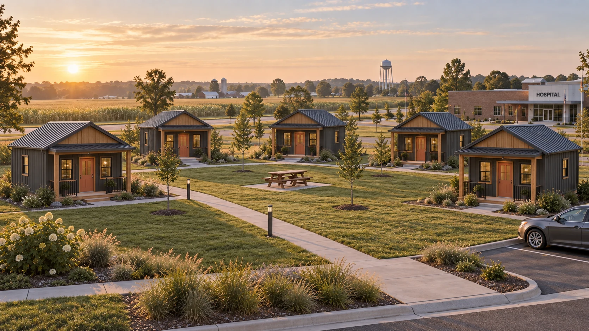
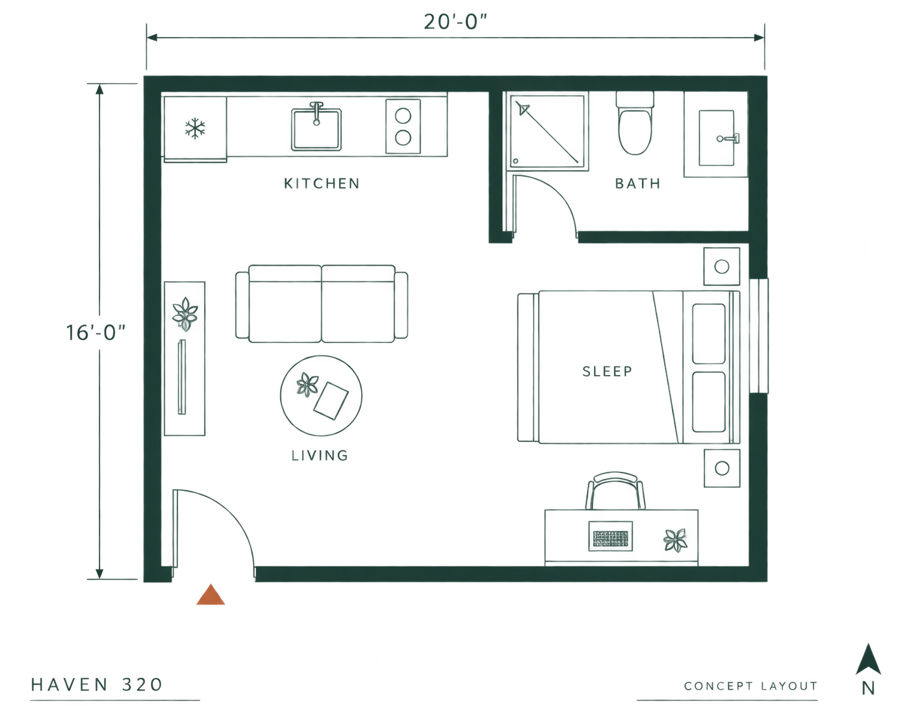

A real home for the people your hospital can't find anywhere else.
They show up for your community.
Give them a place to come home to.
Private, compact homes for healthcare travelers on multi-month assignments.
Find your perspective ↓
I'M LOOKING AT THIS AS...
For local investors, landlords and housing operators.
Purpose-built housing for a tenant who actually stays.
Healthcare assignments often mean months away from home. Haven gives housing operators a focused offering: a private place to sleep, cook and settle in, close to the work that brought someone here.
Room to rest.
Space to be yourself.
A bed that is yours. A meal on your own schedule. A quiet desk for a call home. The essentials of a real home, brought together in one simple plan.
- 20′ × 16′
- Enclosed footprint
- 320 sq ft
- Gross floor area
- One resident
- Private living
- Four essentials
- Sleep · work · cook · bathe
Concept layout shown. Finishes, fixtures and specifications are selected with the client. Final dimensions and accessibility requirements are developed for each project.
View the concept plan ↗
Start with the local need.
Build from there.
A Haven cluster can begin with a modest number of homes and a clear understanding of local demand. Site planning sets the foundation for what comes next.
- 01
Understand the market
Speak with local facilities and staffing contacts about assignment lengths, housing needs and realistic rental budgets.
- 02
Plan the right site
Review access, utilities, drainage, local approvals and foundation design. Ground screws may be an option where engineering and soil conditions allow.
- 03
Build a place people choose
Create a manageable cluster with private homes, simple outdoor space and an operating plan for furnished stays.
See what a Haven cluster could look like near your local hospital.
The useful starting point is your location, your site and the number of homes you have in mind. Every project begins with those particulars.
This is a concept page. Pricing and delivery are project-specific.
Your project starting point
Prepare a short brief for a conversation with Sundello.